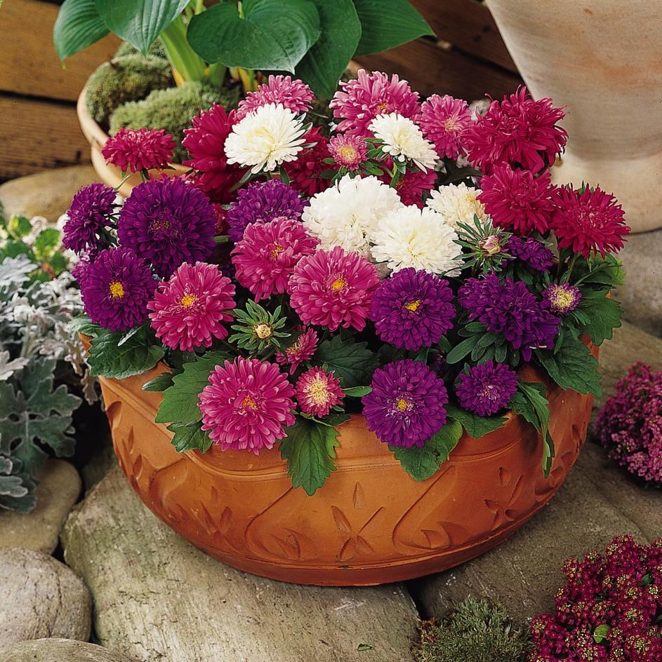

Fig.Aster
Aster is a genus of perennial flowering plants in the family Asteraceae. Its circumscription has been narrowed, and it now encompasses around 180 species, all but one of which are restricted to Eurasia; many species formerly in Aster are now in other genera of the tribe Astereae. Aster amellus is the type species of the genus and the family Asteraceae
The name Aster comes from the Ancient Greek word ἀστήρ (astḗr), meaning "star", referring to the shape of the flower head. Many species and a variety of hybrids and varieties are popular as garden plants because of their attractive and colourful flowers. Aster species are used as food plants by the larvae of a number of Lepidoptera species—see list of Lepidoptera that feed on Aster. Asters can grow in all hardiness zones.
The genus Aster once contained nearly 600 species in Eurasia and North America, but after morphologic and molecular research on the genus during the 1990s, it was decided that the North American species are better treated in a series of other related genera. After this split there are roughly 180 species within the genus, all but one being confined to Eurasia.